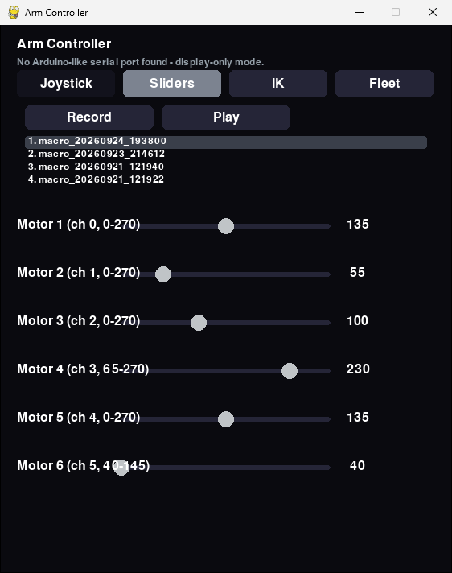
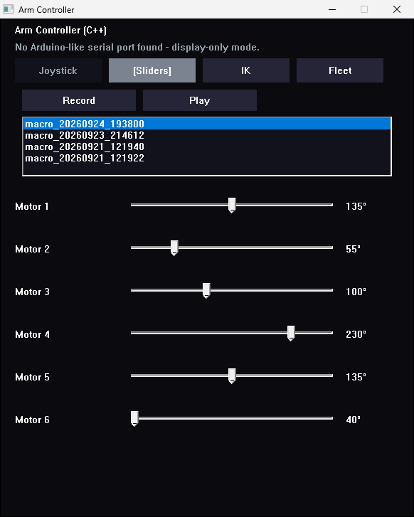
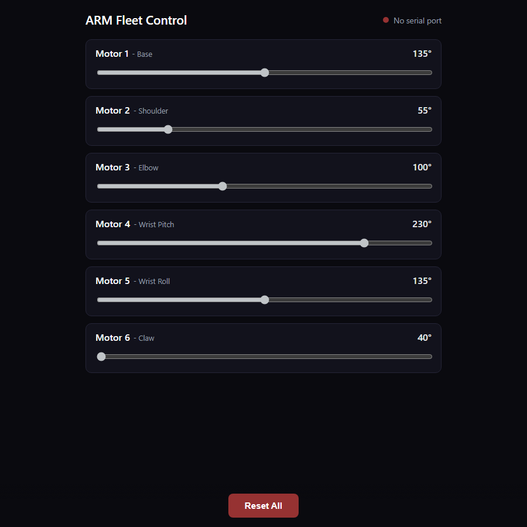

Overview
Six joints, one shared state
Four ways to steer
Joystick, sliders, inverse kinematics (IK) and Fleet mode, in every controller.
Record & replay
Record a sequence of moves, save it to scripts/macros/*.json and replay it from any controller.
Live everywhere
The desktop window, the phone page and RIFT all read and write the same angles. Last writer wins.
Rest pose
On start-up, on Home, and whenever no controller has been heard from for 2 s, she eases back to rest.
No COM ports to set
arm.ino answers WHO with I am Arm, so controllers find her on any port.
One colour file
Every UI takes its colours from colour_scheme.xml. Edit it and restart, with no rebuild.
Controls
Joystick, keyboard or phone
Rest pose
| Motor | 1 base | 2 shoulder | 3 elbow | 4 wrist pitch | 5 wrist roll | 6 claw |
|---|---|---|---|---|---|---|
| Rest angle | 135 | 55 | 100 | 230 | 135 | 40 (open) |
Change it in two places: rest in config.json for the controllers, and REST_ANGLE in scripts/arm/arm.ino (reflash afterwards).
Joystick
| Input | Motor | What it does |
|---|---|---|
| Stick left / right | 1 base | Follows the stick, centred = rest |
| Stick forward / back | 2 shoulder | Follows the stick, centred = rest |
| Twist | 5 wrist roll | Follows the stick, centred = rest |
| Hat up / down | 3 elbow | 5° per press |
| Button 3 / button 2 | 4 wrist pitch | 5° per press |
| Trigger | 6 claw | Held = closed, released = open |
Keyboard
| Keys | Motor | Per press |
|---|---|---|
| A / D | 1 base | −5° / +5° |
| W / S | 2 shoulder | Up / down 5° |
| R / F | 3 elbow | Up / down 5° |
| T / G | 4 wrist pitch | Up / down 5° |
| Q / E | 5 wrist roll | −5° / +5° |
| Space | 6 claw | Held = closed, released = open |
| Shift + any of the above | 1° steps for fine positioning | |
| Home / 1–9 / Esc | Rest pose / pick a macro / quit |
Keyboard control is in the Python controller (controller.py) so far. Every motor stays inside its min/max from config.json, and invert flips its direction.
Controllers
Same arm, your language
Every controller has the same four modes and macros, and reads the same config.json. Launchers live at the repo root.
| Language | UI | Launch | Platforms |
|---|---|---|---|
| Python | pygame | run.bat (sets up its venv) / controller.sh | Windows, Linux |
| C++ | Win32 | build_cpp_controller.bat, then cpp_controller.bat | Windows |
| C# | Avalonia (.NET 8) | csharp_controller.bat / .sh | Windows, Linux |
| Go | Fyne | go_controller.bat / .sh | Windows, Linux |
| Rust | egui | rust_controller.bat / .sh | Windows, Linux |
| Julia | SDL2 | julia_controller.bat / .sh | Windows, Linux |
> cpp_controller.bat --list-ports # see what's connected > cpp_controller.bat --port COM6 --serve # drive her and share the angles $ python scripts/controller.py --connect http://192.168.0.10:5011 # a second window
Leave out --port and the controller asks each port WHO and uses the one that answers I am Arm. That takes about 3 s, so --port is faster if you know it. Joystick support in Rust and Go needs the SDL2 shared library.
Fleet
Join RIFT, or use your phone
Whenever the Python or C++ controller runs, in any mode, it bridges RIFT's HTTP protocol to the Arduino: it serves /status, /cmd?motor=&angle=, /reset and /chirp, and heartbeats /register so ARM shows up in the dashboard on port 5011 (--no-serve keeps her to yourself). run.bat is the entry point: it sets up its own venv and installs the requirements the first time.
> run.bat --list-ports > run.bat --port COM6 --mode fleet
The same server hosts a per-motor slider page: open http://<this machine>:5011/ on any phone or browser on the network, and it stays in sync with the desktop window.
Talking, in Brainfuck
Every phrase is a Brainfuck program that prints its words — hello is ++++++++[>+++++++++++++<-]>.+. → hi — and a robot says it by beeping the program on its buzzer, one tone per symbol, in its own voice. RIFT runs the conversations and asks each robot to speak with GET /chirp?u=<0-13> (phrases 0–6, replies 7–13). ARM’s voice is a passive buzzer on D8 (the other leg to GND), a little lower than the others; the controller passes TALK:<u> to arm.ino.
Inverse kinematics
ARM is the YFROBOT / Makerfabs 6-DOF disc-arm frame. Its link lengths in config.json come from the kit’s dimension drawing: 72 mm from the table to the shoulder pivot, then 104 (upper arm), 143 (forearm) and 173 mm (wrist to closed fingertips). IK measures each joint from an optional per-motor kinematicZero — the raw angle with the base forward, upper arm level and forearm and wrist in line — and falls back to the rest pose until that’s been calibrated.
Several controllers on one arm
Run one controller as the hub (the one with the Arduino plugged in and --serve on), and connect others with --connect http://<hub>:5011. They mirror the hub's angles ten times a second and send changes back, across languages. Connecting never moves the arm.
Sharing a PC with DREAM? Her sensor board answers WHO with I am Dream, so both projects find their own boards whatever COM numbers Windows hands out. Only one program can hold a serial port, so run one controller per arm.
Screens
The controllers
Captured without the arm plugged in, so the controllers are in display-only mode at the rest pose.


